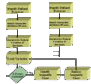
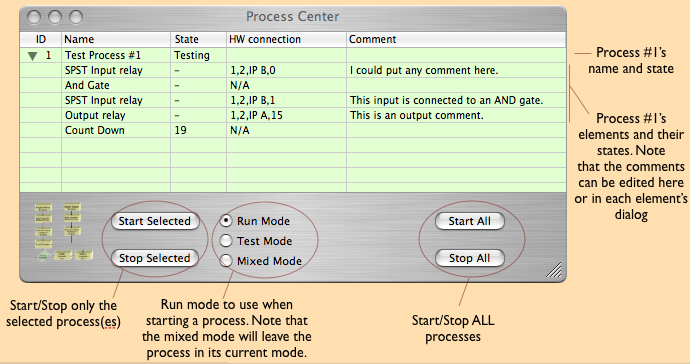

The Process Center is a central location to monitor and control all process control activity. It is opened from the main configuration tool bar or from the 'Window' menu. The tool bar icon looks like this:
 The dialog that opens when the icon is clicked:
